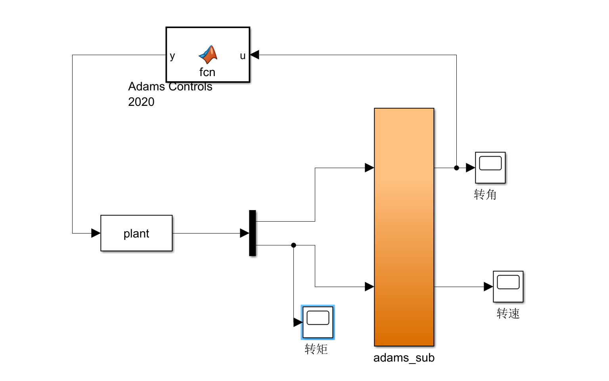

工程设计课程项目——Gamma 型斯特林发动机 ADAMS-MATLAB 联合仿真
本项目以 Gamma 型斯特林发动机为对象，完成了从热力学理论建模、结构参数设计、三维建模、多体动力学仿真 到 ADAMS-MATLAB 联合仿真的全流程闭环。项目最终通过参数敏感性优化达到 1500 r/min 设计转速目标。
关键词：斯特林循环, 史密特理论, 联合仿真, ADAMS, Simulink, 参数敏感性分析
1 热力学建模
1.1 斯特林循环四过程
模型基于等温压缩、等容吸热、等温膨胀、等容放热四个基本过程建立， 并以史密特理论进行准稳态分析，假设理想气体、等温过程与正弦容积变化。 理论计算得到循环做功约 0.2880 J，在理想回热条件下热效率接近 40%。
1.2 参数设计
| 参数 | 数值 | 说明 |
|---|---|---|
| 活塞直径 DP | 12 mm | 影响受压面积与输出力 |
| 活塞行程 SP | 11.8 mm | 影响行程容积 |
| 相位角 α | 90° | Gamma 型机构关键相位关系 |
| 温度比 τ=TC/TE | 0.48 | 决定热压转换幅值 |

Fig. 1 气压-曲柄角与 p-V 特性曲线

Fig. 2 SolidWorks 三维模型与 ADAMS 模型
2 联合仿真平台
在 Simulink 中构建热力子模型，实时根据曲柄角计算瞬时气缸压力、活塞力与输出转矩； ADAMS 负责机械系统多体动力学求解并回传转角、转速，实现双向耦合。

Fig. 3 ADAMS-Simulink 联合仿真框图

Fig. 4 转矩与转速仿真结果
3 参数敏感性分析与优化结果
- 增大活塞直径：提高有效受压面积与单循环输出功。
- 增大气缸长度：提升行程容积与循环功率。
- 优化飞轮转动惯量：提升速度稳定性并改善动态响应。
- 多轮参数迭代后，达到 1500 r/min 设计目标转速。

Fig. 5 优化后转速提升效果

Fig. 6 项目关键结果汇总